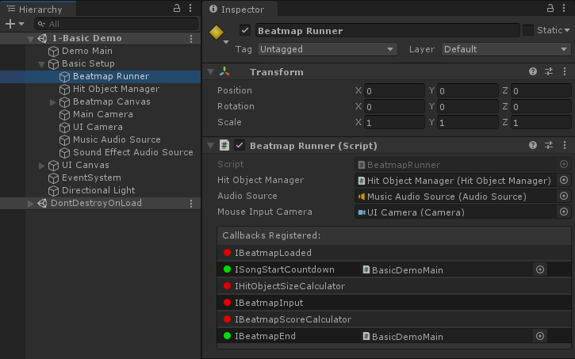

Getting Results
If you want to be notified of when the Beatmap has ended (whether the player won or not), implement IBeatmapEnd in your class like this, and make sure to call SetBeatmapEnd before LoadAndStart:
public class BasicUsage : UnityEngine.MonoBehaviour, MouseDance.Runtime.Callbacks.IBeatmapEnd
{
public MouseDance.Runtime.BeatmapRunner _beatmapRunner;
public UnityEngine.TextAsset _osuFile;
public UnityEngine.AudioClip _song;
void Start()
{
_beatmapRunner.SetBeatmapEnd(this);
_beatmapRunner.LoadAndStart(_osuFile, _song);
}
public void OnBeatmapEnd(MouseDance.Runtime.IBeatmapResults results)
{
print(results.PlayerWin ? "Player Won!" : "Player Lost!");
print($"Score: {results.Score}");
var hitObjects = results.HitObjects;
for (int n = 0, len = hitObjects.Count; n < len; ++n)
{
string type = hitObjects[n] switch
{
OsuParsers.Beatmaps.Objects.HitCircle _ => "Hit Circle",
OsuParsers.Beatmaps.Objects.Slider _ => "Slider",
_ => "Hit Object"
};
string hit = results.WasHit(n) ? "Hit" : "Miss";
print($"Hit Object {n+1}/{len} ({type}): {hit}");
}
}
}
Note that BeatmapRunner.SetBeatmapEnd is called before starting the beatmap.
Your OnBeatmapEnd will be called automatically by the BeatmapRunner when the game ends. You'll get an IBeatmapResults that gives information on the player's score, which Hit Objects they hit or miss, how accurate they were, etc. It's up to you how you want to display that information. The demo scenes have sample code that shows the score getting displayed in the GUI.
Warning
If your OnBeatmapEnd doesn't seem to be getting called, check if you've properly called BeatmapRunner.SetBeatmapEnd.
BeatmapRunner in the Inspector will show you which callbacks have been registered. The one labeled IBeatmapEnd should be green once the game is running.
The name of the registered callback's concrete type will be displayed (namespace and class name). If it is a MonoBehaviour type, it'll show the actual file instead. You can click on that to ping it in the Project tab.

This GUI is only for debugging. It is not designed or intended to register callbacks from the GUI.